Unveiling Fund Performance Metrics
Measure risk, assess returns, and make smarter investment decisions.
Sharpe Ratio
In arriving at the risk adjusted returns, Sharpe ratio considers the returns generated by the fund and the risk free rate (Government security/Treasure bills rates are considered as risk free) to arrive at the excess rate.

If the fund/portfolio returns are 18% and the risk free rate is 8%, the excess return generated by the fund is 10%. The fund has generated 10% over and above the risk free rate, which is nothing but the "Risk premium" of the fund. Standard deviation is used to assess how much risk is involved in generating the excess returns. If the standard deviation of the fund is 4, then the Sharpe ratio of the fund is 2.50.
| Fund A |
Fund B |
Fund C |
Fund D |
Fund E |
Fund F |
Fund G |
| 0.64 |
0.38 |
0.68 |
0.27 |
0.39 |
0.28 |
0.54 |
| 16.86 |
17.98 |
14.84 |
18.74 |
20.02 |
16.75 |
14.13 |
When comparing the Sharpe ratio, higher the ratios better the fund. In the above mentioned illustration, Fund F and B have the higher Sharpe ratio in the fund category, which are better funds. The reason for better Sharpe ratio is portfolio risk (Standard Deviation) of the fund is among the lowest
Treynor Ratio
Both Sharpe and Treynor ratio measures risk adjusted return. Treynor ratio uses mutual fund/portfolio beta while calculating risk adjusted returns, where
as Sharpe ratio uses Standard deviation.

The interpretation of the ratio would remain the same;what is the risk taken, to generate the excess returns.A fund with higher the ratio in the peer group
is considered to be better fund in the category.
Jensen's Alpha:
Alpha is another risk adjusted returns measurement tool which measures the fund manager's outperformance. "Alpha gives the excess returns over the expected rate of return". The objective of the investment is to generate optimum returns with least possible risk. A fund/portfolio with higher Alpha among its peers would be the fund which generates higher return with least risk.
| Fund A |
Fund B |
Fund C |
Fund D |
Fund E |
Fund F |
Fund G |
| 16.86 |
17.98 |
14.84 |
18.74 |
20.02 |
16.75 |
14.13 |
As per the illustration given above, Fund B and Fund F have higher Alpha in the category. They generate higher returns for the limited risk taken by the fund. Both of these funds could be ideal choices for an investor to have in his portfolio.
Expected rate of returns is arrived at by using the Capital Asset Pricing Model (CAPM). The CAPM uses market risk i.e., Fund Beta to compute the expected rate of returns (ER).